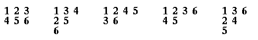
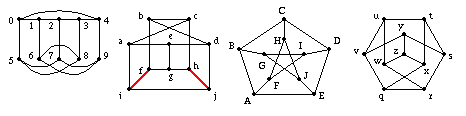
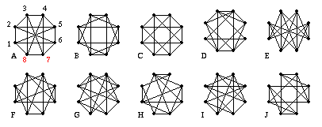

Home Work 5 Math 344S - Winter 1998
Due: 19 March 1998
Read: Sections 1.1 and 1.2.
Do:
-
Section 8.2 # 15.
- Due April 2.
A Young tableau of size n is an arrangement of the integers
1,2,...,n in a left-justified array, like a Ferres diagram, but with
numbers instead of boxes or dots.
For exampe, here are some Young Tableaux of size 6:

How many ordered
pairs (P,Q) of Young tableaux of size 4
(with P and Q having the
same shape)
are there?
(Here, P and Q are Young tableaux of size 4.)
What is the number of pairs of size 5?
-
Show that if a graph has 10 vertices and at least 37 edges, it must be
connected.
Is there a graph with 10 vertices and 36 edges which is disconected?
-
Exhibit isomorphisms between the following graphs:

-
Section 1.1 # 13.
- Show that on any graph, at least two vertices have the same degree.
-
(RATHER HARD!) Due April 2.
Which of the following graphs are isomorphic and which are not?
For the isomorpic pairs, exhibit a matching giving the isomorphism
(Use the labeling indicated in graph A).
For non-isomorphic graphs, give a reason. (Note: it suffices to do this
for one graph in each isomorphism class.)
